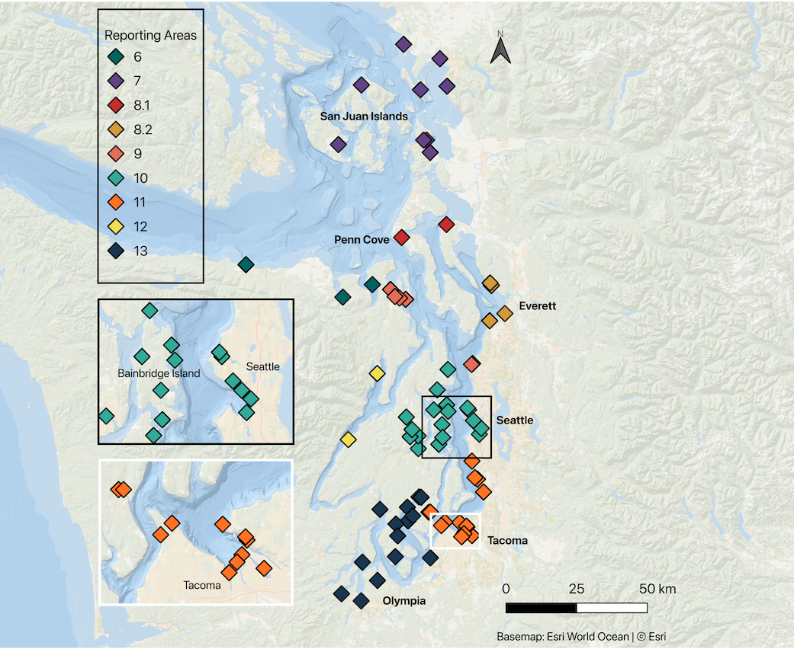
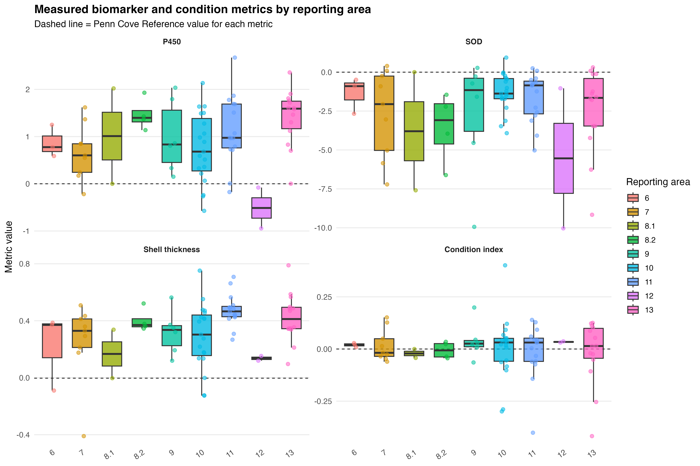
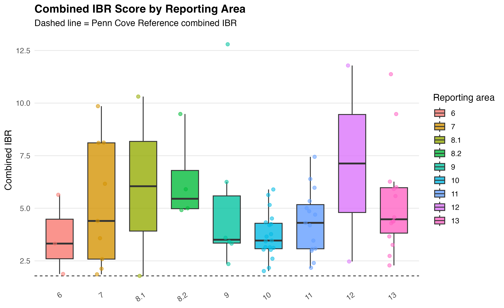
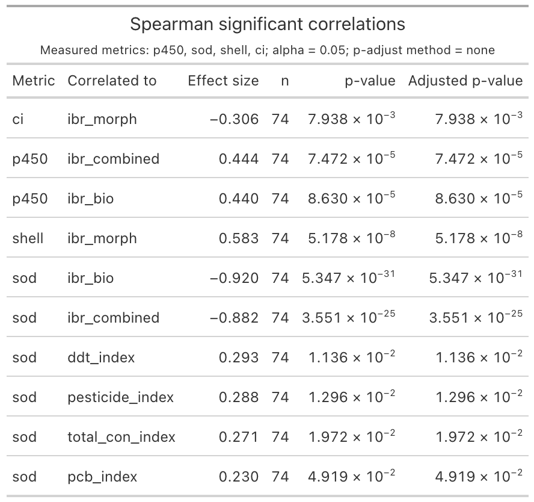
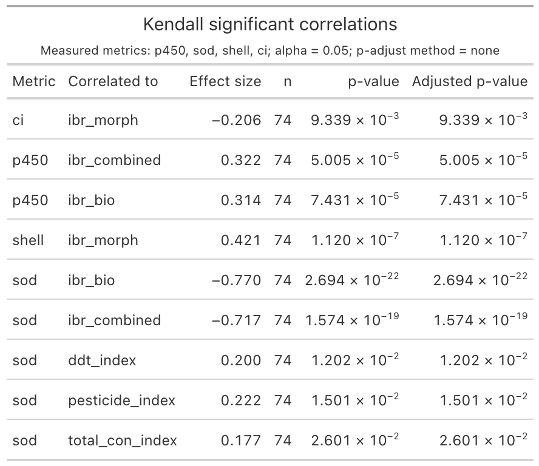
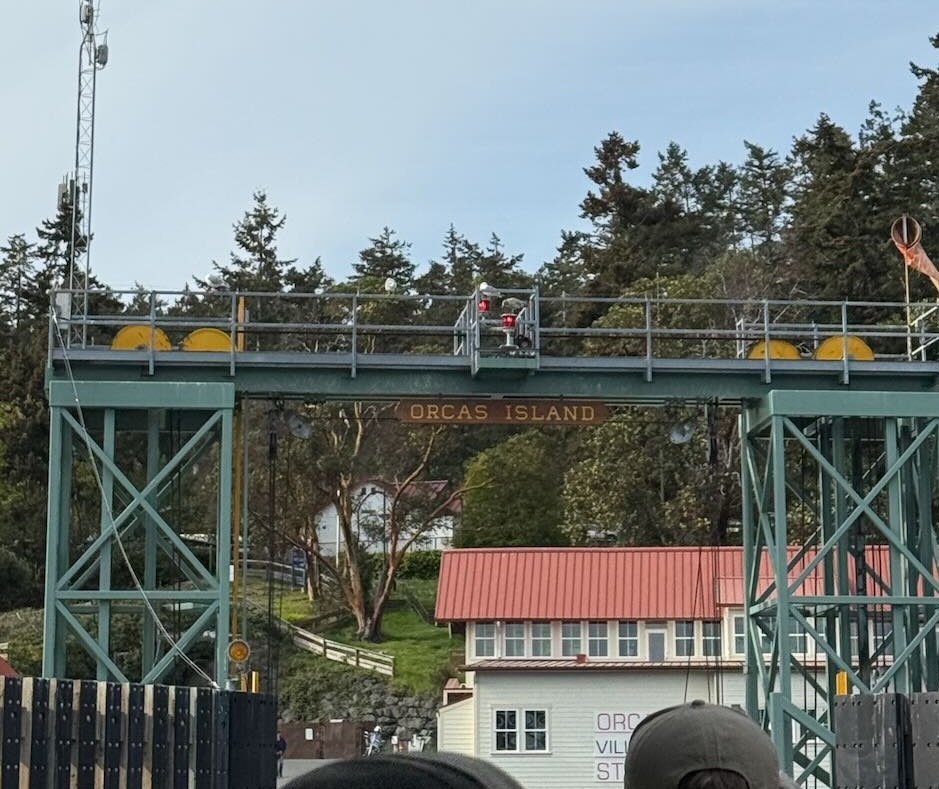

2026 May Daily Posts
This page compiles all daily posts for May 2026.
2026-05-01 — New Month, Same Mission
Plan of the Week: April 27 - May 3, 2026
High- level outline for the week. Adjusted daily to reflect progress of the day before
- This week is all about making progress in my writing deliverables.
Monday - UW-RUA
Tuesday - Finishing my Annual Evals
Wednesday - Methylation & Biomarkers
Thursday - MethylationFriday - Methylation and Biomarkers
Saturday - No Science
Sunday - Methylation
Plan of the Day
Granular level task list to accomplish the high- level goal outlined above
- My primary goals for today are as follows:
- Get my NSF Activities Report submitted
- Work on biomarker visualizations
- Define May goals and strategy to complete them
Projects Touched Today
- Mussel Biomarkers
Progress Notes
- The first thing I did was to complete my NSF activities report and send it to Steven to sign before I upload it.
- An unexpected surprise came from PoE opening a call for pre-doc candidates to teach some of their courses as the Instructor of Record - I will be submitting my application before the May 18th deadline.
- I did reach out to a few folks to confirm I can use them as my references, and put the rest of the app on the task list for next week.
- I had to shift to knocking out some UW-RUA tasks so I could focus on my own work for the rest of the day.
- Moving over to biomarkers, my first step is to make a list of figures that support the main result and manuscript narrative, then I will review what I have and determine what I need before jumping in to create that.
- The main takeaway is that the spatial results of the contaminants are highly correlated, but the biomarkers are not; neither the normalized (to the reference) value nor the composite IBR score reflect a consistent significant correlation between the contaminant profiles and the biomarker response at the site nor the reporting area level.
- In addition, the contaminant profile at the reference site indicated a high SOD response that may be related to many factors outside of the contaminant profile.
- While reviewing biomarkers, I had to break to meet with the TNC folks re: Yellow.
- We have to spend the balance of the funding before the end of the 2026 fiscal year, so since the quote left some room remaining for additional sequences, I’m going to head up to Yellow on Sunday to take eDNA samples and head home. Not ideal, but so be it.
- Because of the shift in plans, I had some restructuring of the remainder of Friday through Sunday to do’s.
- I shifted my Saturday tasks to Friday, opening Saturday for work that was slated for Sunday/ Monday.
- I paused today’s work to get through my personal obligations since I’m almost out of the woods and back on track with manageable daily workloads.
- We have to spend the balance of the funding before the end of the 2026 fiscal year, so since the quote left some room remaining for additional sequences, I’m going to head up to Yellow on Sunday to take eDNA samples and head home. Not ideal, but so be it.
Outcomes: Products & Word Count
- No tangible products
Today’s total: 0 words
Monthly total to date: 0 words
Annual total to date: 41,162 words
Annual target total to date: 58,500 words
Next Up: Tomorrow’s Plan
- Biomarker figures and result re-working.
- Methylation results and discussion framing.
2026-05-02 - Saturday Sunshine will have to Wait!
Plan of the Week: April 27 - May 3, 2026
High- level outline for the week. Adjusted daily to reflect progress of the day before
- This week is all about making progress in my writing deliverables.
Monday - UW-RUA
Tuesday - Finishing my Annual Evals
Wednesday - Methylation & Biomarkers
Thursday - Methylation
Friday - Methylation and BiomarkersSaturday - No Science
Sunday - Methylation
Plan of the Day
Granular level task list to accomplish the high- level goal outlined above
- My primary goals for today are as follows:
- Work on biomarker visualizations and results
- Define May goals and strategy to complete them
- Methylation results and discussion points
Projects Touched Today
- Mussel Biomarkers
- Yellow Island
Progress Notes
- The first thing I did was to brain dump the tasks related to the mussel work - biomarkers and methylation.
- One of my goals for May is to get the biomarker manuscript out to my committee and WDFW
- Another May goal is to have a complete, semi-polished draft of the methylation work
- My last goal for May is to frame Chapters 3 & 4 for my proposal and build those with Steven as the other work progresses. The point here is logical, doable, chapters that build on the first two while (1) creating new knowledge with what we already have, and (2) validating that new knowledge.
- My point here, of veering toward my May goals, is to help me define my weekly and then daily tasks to complete what is in front of my while maximizing my efforts (in lit review especially) to keep my focus forward. This helps me not get stuck in trying to perfect what I cannot perfect alone.
- My non-science May goal is to share the crappy drafts, share the messy plan, share before I feel like I am ready. This has always been a problem for me, I want things to be the best I can make them before asking for feedback, but it has proven (repeatedly) to be an unnecessary time suck. I do not have the time to fork over - I need it to sit with the lit, the analysis results, the thoughts need room to breathe - they can’t do that if I’m always trying to put a shine on $h1+…
- Back to Biomarkers.
- I am ignoring the exploratory plots for this exercise.
- The only ones that may illustrate the biomarker- only values and the IBR scores are the radars for the reference site and any other site for comparison.
- All others are designed with the supplementary information in mind.
- The main figures should illustrate where we worked, what we found, how what we found relates (or doesn’t) contaminant concentrations and mussel response.
- Map of the sampling sites color coded by reporting area.
- A 2 panel plot that shows the site-level P450 values in one panel and the SOD values in the next. Color coded by reporting area, symbol size = activity level.
- A 3 panel box plot of the IBR scores, biomarkers only, morphometrics only, and then the combined. For a clean plot, it will have to be at reporting area level, maybe a site-level one can be in the supplement to show the intra-site variability.
- A 3 panel map of the contaminant class spatial analysis (likely PAH and PCB) next to the combined IBR scores. All color coded by reporting area with symbol size = magnitude
- I am ignoring the exploratory plots for this exercise.
I think the plots below illustrate what I outlined above, noting that polishing the viz will come during edits/ writing revisions.





Outcomes: Products & Word Count
- Biomarker visualization and justification & captions: 150 words
- 5 plots, maps or tables produced
Today’s total: 0 words
Monthly total to date: 0 words
Annual total to date: 41,162 words
Annual target total to date: 59,000 words
Next Up: Tomorrow’s Plan
- Yellow eDNA sampling.
- Map out bench work schedule to send to Cole for the DNA extractions and QC.
2026-05-03 - Hurry Up & Wait
Plan of the Week: April 27 - May 3, 2026
High- level outline for the week. Adjusted daily to reflect progress of the day before
- This week is all about making progress in my writing deliverables.
Monday - UW-RUA
Tuesday - Finishing my Annual Evals
Wednesday - Methylation & Biomarkers
Thursday - Methylation
Friday - Methylation and Biomarkers
Saturday - No ScienceSunday - Methylation
Plan of the Day
Granular level task list to accomplish the high- level goal outlined above
- My goal for today is to get these samples and beat traffic back.
Projects Touched Today
- Yellow Island
Progress Notes
- Nothing like getting up at 4a to make a ferry that is now the catchall for the earlier ferries that were cancelled…
- Made it to Orcas Island, then Yellow to collect my samples before the low tide window closed.
- Something hilarious about being so short that even when you fully extend your arms you are not taller than the cyclists in front of you to get a better photo of landing!

2026-05-04 - Monday Catch-Up
Plan of the Week: May 4 - May 10, 2026
High- level outline for the week. Adjusted daily to reflect progress of the day before
- This week is all about getting biomarkers out!
Monday - Catching up & weekly planning
Tuesday - Steven Working Session & UW-RUA
Wednesday - Biomarkers & UG Bench Prep
Thursday - Biomarkers & Bench Work
Friday - Biomarkers & Bench
Saturday - Biomarkers
Sunday - Afternoon Methylation Work
Plan of the Day
Granular level task list to accomplish the high- level goal outlined above
- My goals for today are:
- Wrap-up my GSAR and Steven 1v1 Agenda for Tuesday
- Continue the methylation results and discussion framing
- Plan T-F with specific tasks
Projects Touched Today
- Mussel Methylation
- Mussel Biomarkers
Progress Notes
- Mondays are email/ task/ planning days
- I took a look at my upcoming deliverables, knocked out comms, and started building a plan for the week. My primary focus is on getting my mussel manuscripts out for review and editing.
- I also have a flurry of tasks for the last UW-RUA professional development programming event that takes place tomorrow.
- I looked at what is on the agenda for tomorrow with Steven and started by knocking out my half of the GSAR. Not a morale booster, that’s for sure.
- Turning to biomarkers - I added the notebook post with updated figures.
- I spent time writing out specific tasks to update the writing.
- Shifting to methylation, I took my handwritten notes and added a lose framing to both the results and discussion sections.
- I added the progress for 2026-27 AY funding options.
- Added the update on getting Cole into the lab.
- I shifted over to knocking out UW-RUA tasks for tomorrow before meeting with Yen-Chu to discuss the PoE teaching positions at the end of the day.
Outcomes: Products & Word Count
- Drafting methylation: 386 words
Today’s total: 386 words
Monthly total to date: 386 words
Annual total to date: 41,548 words
Annual target total to date: 60,000 words
Next Up: Tomorrow’s Plan
- Will be made during weekly set-up.
2026-05-05 - Meetings & Networking
Plan of the Week: May 4 - May 10, 2026
High- level outline for the week. Adjusted daily to reflect progress of the day before
- This week is all about getting biomarkers out!
Monday - Catching up & weekly planningTuesday - Steven Working Session & UW-RUA
Wednesday - Biomarkers & UG Bench Prep
Thursday - Biomarkers & Bench Work
Friday - Biomarkers & Bench
Saturday - Biomarkers
Sunday - Afternoon Methylation Work
Plan of the Day
Granular level task list to accomplish the high- level goal outlined above
- My goals for today are:
- Meet with Steven
- Pull off the last UW-RUA event!
Projects Touched Today
- Mussel Methylation
- Mussel Biomarkers
Progress Notes
- Today is a meeting/ event heavy day.
- First up, my weekly 1v1 with Steven.
- Deliverables for next week include updates to both mussel manuscripts
- The remainder of the day was UW-RUA tasks and events.
- First up, my weekly 1v1 with Steven.
Outcomes: Products & Word Count
- No products
Today’s total: 0 words
Monthly total to date: 386 words
Annual total to date: 41,548 words
Annual target total to date: 60,500 words
Next Up: Tomorrow’s Plan
- Will be made in the AM.
2026-05-06 - On Wednesdays We Write in Pink
Plan of the Week: May 4 - May 10, 2026
High- level outline for the week. Adjusted daily to reflect progress of the day before
- This week is all about getting biomarkers out!
Monday - Catching up & weekly planning
Tuesday - Steven Working Session & UW-RUAWednesday - Biomarkers & UG Bench Prep
Thursday - Biomarkers & Bench Work
Friday - Biomarkers & Bench
Saturday - Biomarkers
Sunday - Afternoon Methylation Work
Plan of the Day
Granular level task list to accomplish the high- level goal outlined above
- My goals for today are:
- Wrap-up biomarkers results and discussion
- Clean up the biomarker manuscript folder to include in review
- Prep for UG bench support on Thursday
Projects Touched Today
- Mussel Biomarkers
Progress Notes
- Today started with a daily planning session, prep for the handful of meetings I have, and outlining the biomarker results re-work.
- First up was task dumping and daily prep, today’s working block will focus on re-working the results section of the biomarker paper by:
- Reorganizing the order results are delivered, spatial first, followed by biomarker activity and IBR scores.
- Next was lab meeting where we did a check-in and supported an undergrad in preparing for the presentation of their work.
- First up was task dumping and daily prep, today’s working block will focus on re-working the results section of the biomarker paper by:
- I printed the draft visuals for the biomarker paper to help me keep the bigger picture in mind and ensure the narrative the viz tells is aligned with what I write.
- I met with folks from Puget Sound Partnership to discuss an upcoming conservation event.
- Turning back to biomarkers, I drafted a high level outline of topic sentences that match the results to the discussion.
- After re-reading what I have already written, I was able to re-work most of what was already there, by stripping it down to elementary- level sentences and removing any interpretation.
- Next I did the same with the discussion and then the last 3 paragraphs of the introduction. The doc looks crazy, but it helps me see the narrative clearer.
- I wrapped up the day by attending the professional development programming postmortem with the academic affairs team.
Outcomes: Products & Word Count
- Drafting biomarker revisions: 431 words
Today’s total: 431 words
Monthly total to date: 817 words
Annual total to date: 41,979 words
Annual target total to date: 61,000 words
Next Up: Tomorrow’s Plan
- Continue biomarker work and prep for getting Cole setup in the lab.
2026-05-07 - Bench Work & Biomarkers
Plan of the Week: May 4 - May 10, 2026
High- level outline for the week. Adjusted daily to reflect progress of the day before
- This week is all about getting biomarkers out!
Monday - Catching up & weekly planning
Tuesday - Steven Working Session & UW-RUA
Wednesday - Biomarkers & UG Bench PrepThursday - Biomarkers & Bench Work
Friday - Biomarkers & Bench
Saturday - Biomarkers
Sunday - Afternoon Methylation Work
Plan of the Day
Granular level task list to accomplish the high- level goal outlined above
- My goals for today are:
- Continue with the biomarker re-work
- Get Cole through lab ‘onboarding’ tasks
Projects Touched Today
- Mussel Biomarkers
Progress Notes
- Today started with wrapping up some UW-RUA tasks and then moved into prep for the NWStraits fundraiser.
- Met with Don and Mary Margaret to go over the plan for the cruise, and left with a few action items to prepare for the May 15th event.
- I transitioned to preparing the print materials for Cole that I gathered yesterday.
- Protocols, lab safety forms, and skill inventory and schedule are ready to go for this afternoon.
- I finally took my notes for my May goals and added the steps to complete them noting the goal for Chapters 3 & 4 will continue into June.
- I started my biomarker work block by reviewing what I completed yesterday, and chose to focus the first 45 minutes on creating the spatial analysis maps.
Outcomes: Products & Word Count
- Something: 0 words
Today’s total: 0 words
Monthly total to date: 817 words
Annual total to date: 41,979 words
Annual target total to date: 61,500 words
Next Up: Tomorrow’s Plan
- Mussels x ∞.